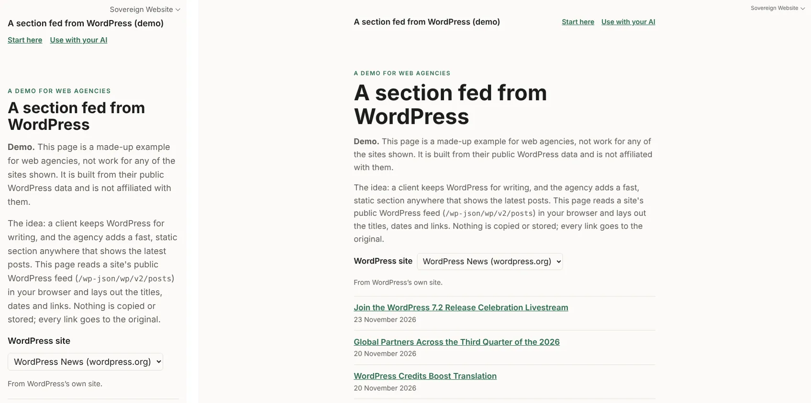

Synthetic users: the WordPress section demo, round 1 (baseline)
Site: https://wordpress-section.demo.sovereignweb.site/ at a44d8fc (v0.1.1), our own demo for web agencies: a static section that reads a site's public WordPress feed in the browser, with six public sites to choose from. Run: 23 November 2026, about 23:50 UTC, by design.b.rounds, asked by design.b. Would an agency show this to a client, as it is? 2 of 5. Look 2.8 (3, 2, 3, 3, 3). Nobody said "wow". The review.
Method: Synthetic users. One agent played five personas from captures of the phone (light and dark), the desktop, and a blocked feed. These are simulations, and never replace the measured checks or a real person.
| Persona | Yes? | Look | In their words |
|---|---|---|---|
| Agency owner | yes | 3 | "It makes the point in one line a client can follow ... I would not leave it with the client as a finished piece." |
| Agency designer | no | 2 | "'Style it to the site's design' is a promise, but the demo shows only one plain style ... A client would see a list of links, not a section of their site." |
| Client (a small charity) | yes | 3 | "I like that 'every link goes to the original' and that it 'needs no plugin, no server and no login'." |
| Low-vision reader | no | 3 | "on the first phone screen no posts are visible ... When I switched to NASA, nothing on the screen showed whether posts had loaded or failed." |
| Sceptical developer | no | 3 | "The page does not say how it handles errors, timeouts or slow feeds." |
Agreed by all five: the demo and "not affiliated" wording is clear, in bold at the top and again for each site. Agreed by three: the result is a bare list of underlined titles and dates, with no images or excerpts and one plain style.
